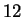
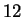

Figure 3.12 shows predicted results for the auditory example at
. The predicted results for the visual example are
shown in Figure 3.13.
The top left panel in the window shows the graph of the input stimulus used
for prediction. If the spatial domain of the input stimulus is  ,
,
 is time and
is time and  is frequency in Hz.
If the spatial domain of the input stimulus is
is frequency in Hz.
If the spatial domain of the input stimulus is  ,
it only shows first 
,
it only shows first   video frames in the current version
of STRFPAK.
The bottom left panel shows the predicted PSTH together with
the two PSTHs from the input response.
The user can easily see the goodness of fit from this plot.
The right panel of the window is for information display.
The tolerance value used for above plots
is given in the text field of the Tol val.
If more than one Tol values are used for calculation,
different Tol. values
can be shown by pressing Next Tol Val
and Prev Tol Val buttons.
The names of stimulus file and
response file used for the plots in the left panel
are shown in pred stim file field and
pred resp file field.
If more than one stimulus-response files are used for the prediction,
different files
can be shown by pressing Next file
and Prev file buttons.
Help and Close buttons are provided in the
bottom right position of the window.
video frames in the current version
of STRFPAK.
The bottom left panel shows the predicted PSTH together with
the two PSTHs from the input response.
The user can easily see the goodness of fit from this plot.
The right panel of the window is for information display.
The tolerance value used for above plots
is given in the text field of the Tol val.
If more than one Tol values are used for calculation,
different Tol. values
can be shown by pressing Next Tol Val
and Prev Tol Val buttons.
The names of stimulus file and
response file used for the plots in the left panel
are shown in pred stim file field and
pred resp file field.
If more than one stimulus-response files are used for the prediction,
different files
can be shown by pressing Next file
and Prev file buttons.
Help and Close buttons are provided in the
bottom right position of the window.